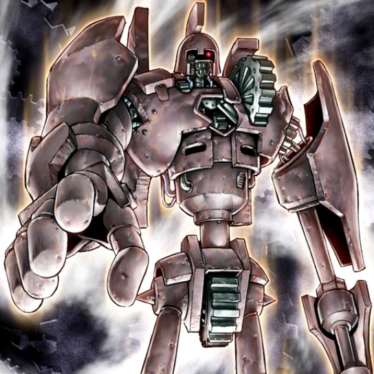

Ancient Gear Golem Recipe

The Ancient Gear Core
These are the staples within the Ancient Gear archetype you'll be using to build your deck list. While your ratios may fluctuate, these cards are the bare-minumum you'll want to have on hand.
Main Deck Monsters
- 1x Ancient Gear Golem
- 2x Ancient Gear Frame
- 3x Ancient Gear Wyvern
- 2x Ancient Gear Dark Golem
- 2x Ancient Gear Box
- 2x Ancient Gear Tanker
- 2x Ancient Gear Commander
Main Deck Spells
- 2x Ancient Gear Catapult
- 2x Ancient Gear Fusion
- 3x Ancient Gear Advance
- 2x Geartown
- 3x Ancient Gear Fortress
Main Deck Traps
Extra Deck Monsters
- 2x Ancient Gear Ballista
- 1x Chaos Ancient Gear Giant
- 2x Ancient Gear Howitzer
- 2x Ultimate Ancient Gear Golem
The Ancient Gear Gameplay Loop
Here is a basic combo you can use to get your plays started.
- Activate Ancient Gear Fusion to Special Summon 1 of your Extra Deck Monsters.
- Enter the Battle Phase and send your opponent to the Shadow Realm
This deck doesn't really have a 'gameplay loop' per se, you just want to summon a large fella and attack several times.